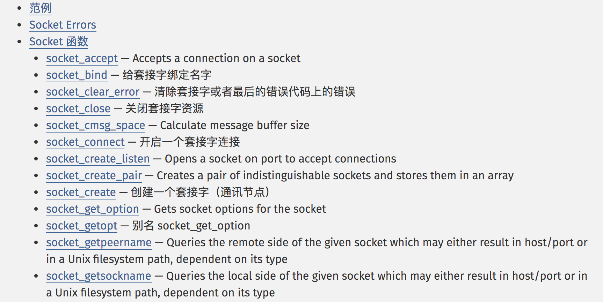

一、概述
写一个高性能服务器，像redis、memcache和nginx那样，支撑很高的并发，稳定地解决性能问题，其实并不是件很难的事。
本文先从网络编程的细节出发，讲讲网络编程会碰到的问题；再介绍业界流行到2016年的事件驱动模型Reactor，这个模型是并发编程必须要学习的。
为什么说流行到2016年呢？因为2016年Go语言火遍全球，Go语言采用的并发编程模型就是– goroutine），将开发者从各种事件回调中解放出来，代码编写及维护更加人性化。
讲完Reactor后就讲讲redis、memcache和nginx，毕竟它们都是基于这个模型的。
一、从问题出发
写一个服务器，跟一个客户端建立连接，然后处理请求。不管用什么语言，php还是java，都是很简单的事。
一般步骤都是bind->listen->accept之后就可以跟客户端互相交流了。

如果客户端增多，一个服务器要跟多个客户端交流，这时候换成C/C++，引入epoll多路复用也可以了。
但这时候的交流并不是高效的，一旦碰到下面的问题，服务器不做点什么就很容易宕机。
- 如何给客户端发送数据？
好像一个send或者write函数就可以了，但send或write 1M数据和1G数据肯定是不一样的，平时下载电子书跟下载小电影也能看出来
2. 如何正确关闭连接？
服务器发完数据了，一般都觉得没什么事就把连接关了吧。但问题来了，可能客户端还有数据要发送给你，因为网络原因或者其他原因，还在路上。
等到它网络好了，发过来了，而服务器已经关了，这是很沮丧的，导致数据丢失。
二、解决问题
首先看socket缓冲区
1）每个 socket 被创建后，都会分配两个缓冲区，输入缓冲区和输出缓冲区。

2）write()/send() 并不立即向网络中传输数据，而是先将数据写入缓冲区中，再由TCP协议将数据从缓冲区发送到目标机器。
一旦将数据写入到缓冲区，函数就可以成功返回，不管它们有没有到达目标机器，也不管它们何时被发送到网络，这些都是TCP协议负责的事情。
3）TCP协议独立于 write()/send() 函数，数据有可能刚被写入缓冲区就发送到网络，也可能在缓冲区中不断积压，多次写入的数据被一次性发送到网络，
这取决于当时的网络情况、当前线程是否空闲等诸多因素，不由程序员控制。
4）read()/recv() 函数也是如此，也从输入缓冲区中读取数据，而不是直接从网络中读取。
解决第1个问题
无论是给客户端发送数据，还是接收客户端数据，大小是不可知的，你不能只有电子书，也要有小电影。
参考socket缓冲区，如果所要发送的数据过大，先把能发送的给发送出去，剩下的我们需要将其暂存起来，所以我们需要建立一个“发送缓冲区”。
发送缓冲区不仅存放本次没有发完的数据，还用来存放在发送过程中，新的需要发送的数据。
为了保证顺序，新的数据应该追加在当前剩下的数据的后面，发送的时候从发送缓冲区的头部开始发送。也就是说先来的先发送，后来的后发送。
接收缓冲区也是同理。
解决第1个问题
无论是给客户端发送数据，还是接收客户端数据，大小是不可知的，你不能只有电子书，也要有小电影。
参考socket缓冲区，如果所要发送的数据过大，先把能发送的给发送出去，剩下的我们需要将其暂存起来，所以我们需要建立一个“发送缓冲区”。
发送缓冲区不仅存放本次没有发完的数据，还用来存放在发送过程中，新的需要发送的数据。
为了保证顺序，新的数据应该追加在当前剩下的数据的后面，发送的时候从发送缓冲区的头部开始发送。也就是说先来的先发送，后来的后发送。
接收缓冲区也是同理。
解决第2个问题
被动关闭连接和主动关闭连接
1）在实际的应用中，被动关闭连接是由于我们检测到了连接的异常事件，比如EPOLLERR，或者对端关闭连接，send或recv返回0，这个时候这路连接已经没有存在必要的意义了，我们被迫关闭连接。
2）而主动关闭连接，是我们主动调用close/closesocket来关闭连接。比如客户端给我们发送非法的数据，比如一些网络攻击的尝试性数据包。这个时候出于安全考虑，我们关闭socket连接。
第2个问题的出现场景，主要是服务器不确定接收的数据是否完整。
应对这种问题，很明显地需要采用被动关闭方式。
被动关闭：客户端先关闭连接（调用close或者shutdown函数）， 然后服务器从连接中read返回0，得知客户端已经关闭其方向上的连接，此时就会触发关闭逻辑。
具体来说，服务器处理完数据之后（收到EOF，逻辑处理，向客户端发送数据），关闭了服务器到客户端方向的写操作，当客户端收到该关闭信息后，会立即关闭本方向的连接。然后等客户端shutdown或者close之后，服务器从连接中read读到0，于是服务器关闭连接。
shutdown函数具体参考http://c.biancheng.net/cpp/html/3044.html
这两个问题是比较经典的问题，第2个问题在知乎上也有讨论https://www.zhihu.com/question/48871684
分享会上hugo提出的问题，半关闭是什么状态？
客户端主动关闭时，发出FIN包，收到服务器的ACK，客户端停留在FIN_WAIT2状态。而服务端收到FIN，发出ACK后，停留在COLSE_WAIT状态。
这个CLOSE_WAIT状态非常讨厌，它持续的时间非常长，服务器端如果积攒大量的COLSE_WAIT状态的socket，有可能将服务器资源耗尽，进而无法提供服务。